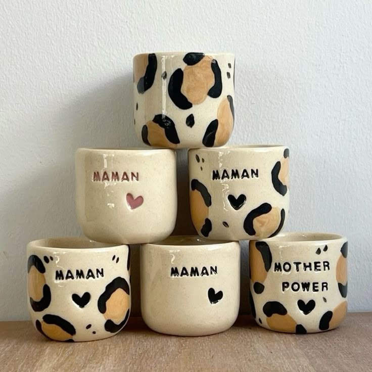
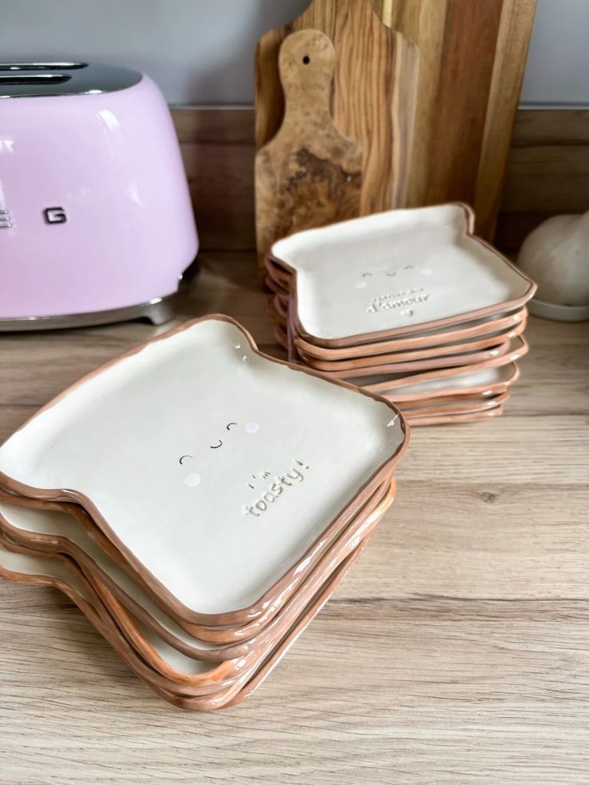
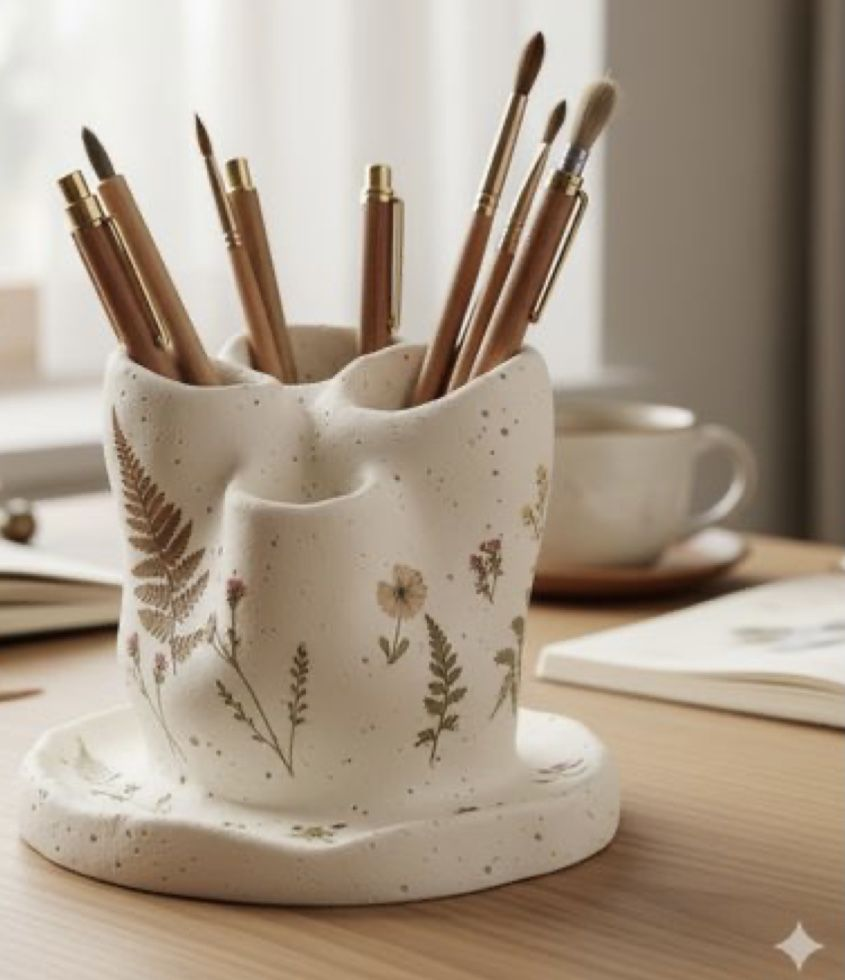

Nos créations uniques

Mug personnalisé
45 Dinars
Pour la Fête des Mères, offrez un mug unique, créé avec amour et délicatesse. Chaque tasse est pensée pour accompagner les moments précieux de nos mamans et leur rappeler chaque jour combien elles sont spéciales. 💖

Assiette toast
35 Dinars
Assiette toast en céramique Assiette originale , avec finition crème brillante et bords terracotta. Parfaite pour le petit-déjeuner, les desserts ou une présentation gourmande et tendance. ✨

Pot à crayons
50 Dinars
Élégant pot à crayons en céramique effet naturel, décoré de délicates illustrations florales. Idéal pour organiser stylos et pinceaux tout en apportant une touche douce et chaleureuse à votre bureau.